| 导航栏 | | VHE教程 | |
第三章：制作一张简单的地图首先，我们新建一个地图 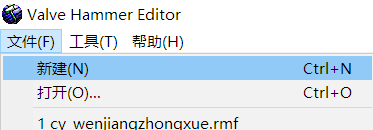
选择固体工具 。 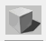
在地图上拉出一个方块。 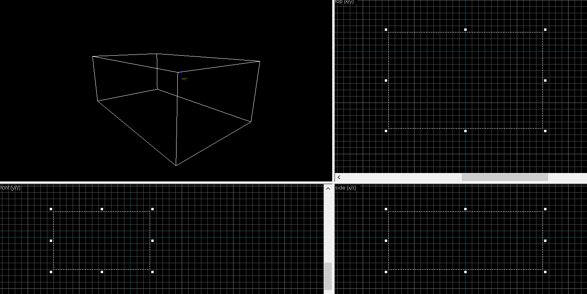
按Enter或者右键-建立 。 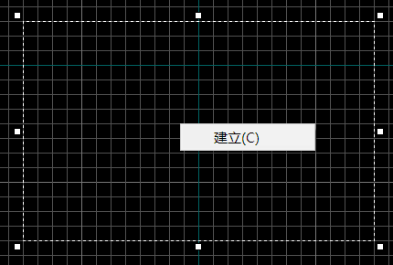
效果如图： 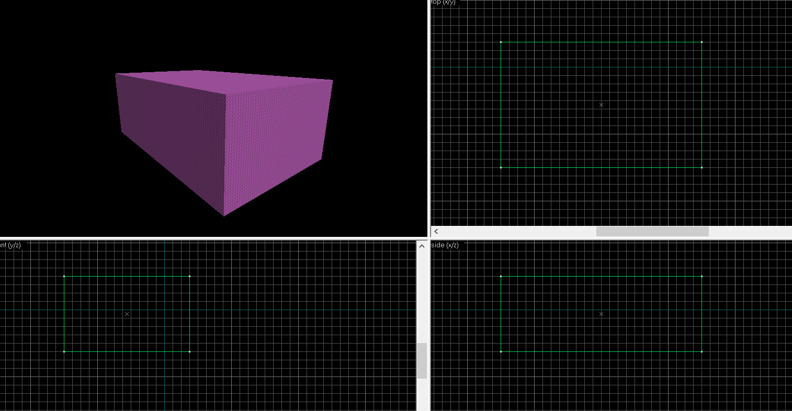
修改它的纹理：在右侧下拉菜单选择需要的纹理。 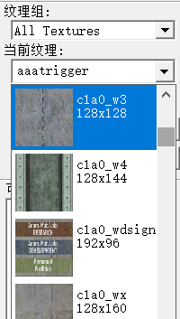
选中纹理和固体，点应用当前纹理 。 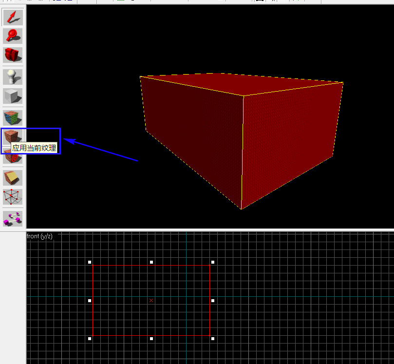
效果如图： 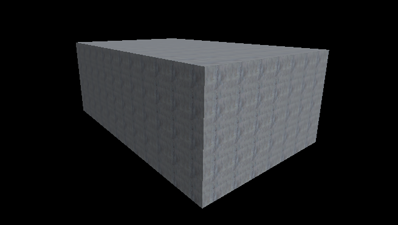
但这个固体是实心的，我们要把它弄成空心的。选中固体，点击工具-挖空。 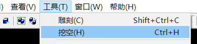
厚度，默认是32。 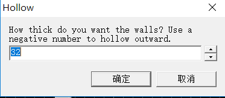
点击确定，里面是空的了。 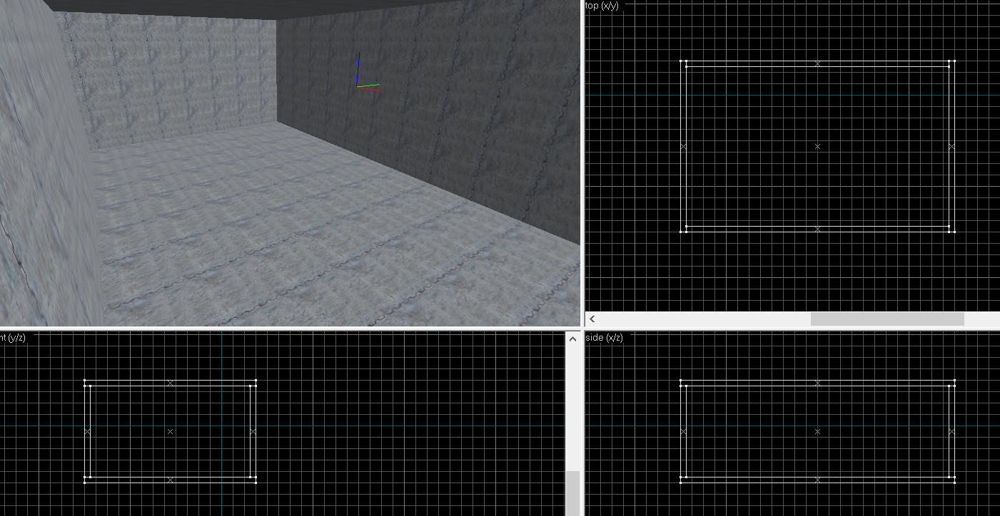
然后我们需要2个出生点。点击点实体工具，在2D或3D图上点击左键开始建立一个点实体，拖拽来调整位置： 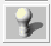
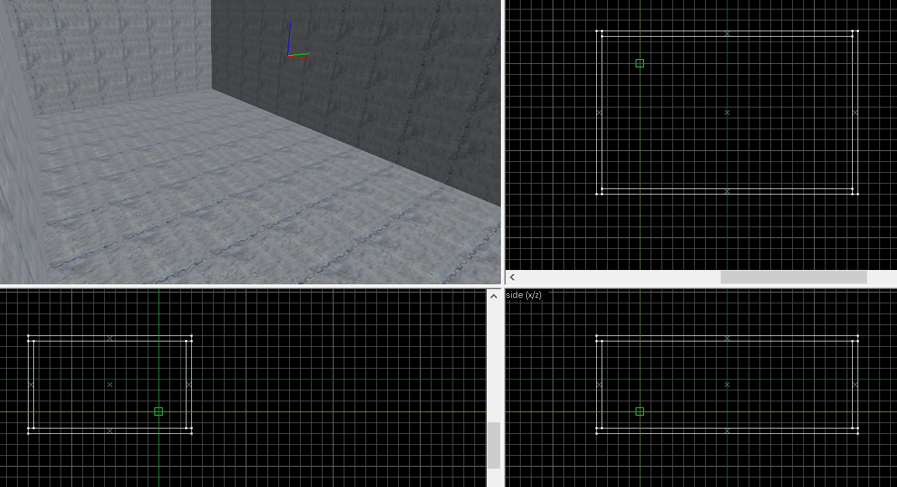
按Enter或者右键-建立，调整好位置 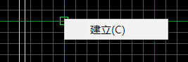
选中刚才建立好的点实体，在上面点击右键-对象属性，选择info_player_start 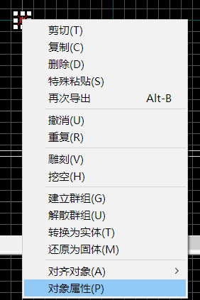
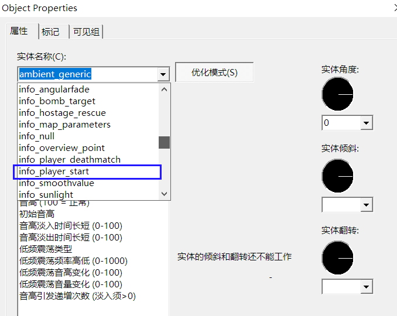
警察阵营的出生点做好了，还要做匪徒阵营的出生点。 方法同上，调整位置后属性选info_player_deathmatch 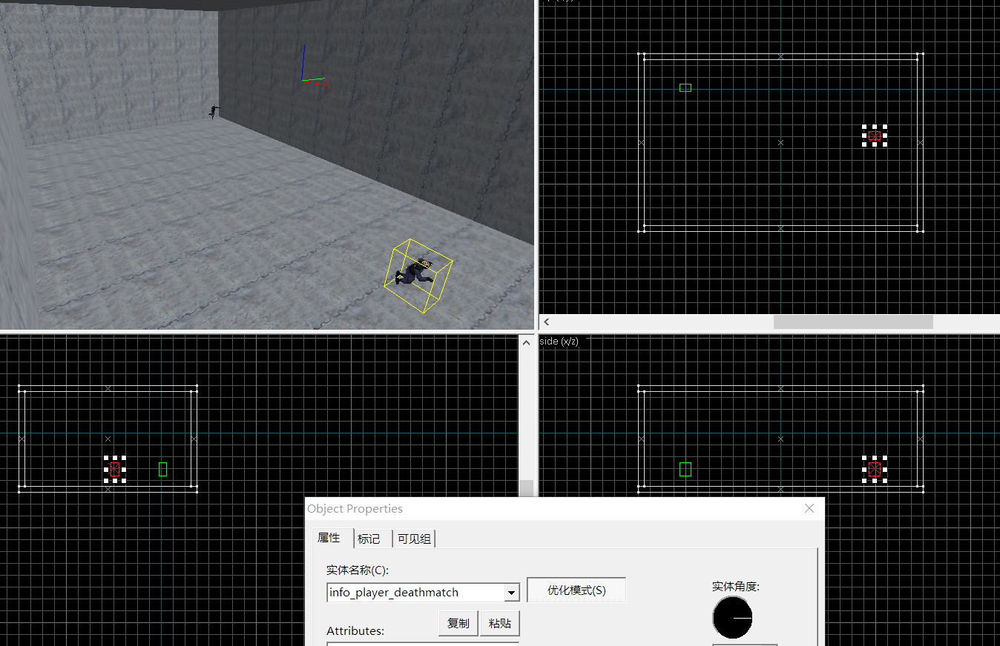
我们还需要做一盏灯，不然地图是黑的。方法依然同上，把点实体放在天花板下，属性选择light。 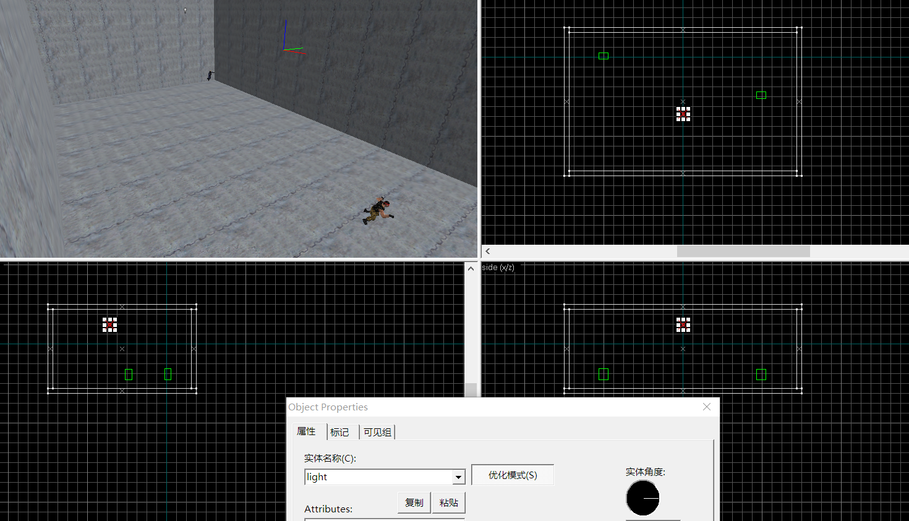
地图做好了，但编辑器保存的文件是rmf或map，CS需要的是bsp文件，所以接下来我们要把地图编译成bsp地图。点击文件-编译地图或者按快捷键F9。弹出一个对话框。 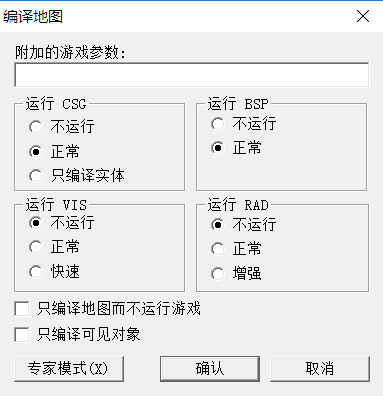
按如图方式勾选。点击确认，等待编译。编译出的地图会被放在你设置的文件夹中。 |